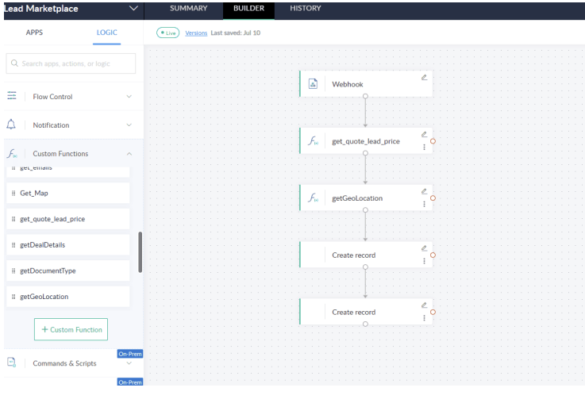

Lead marketplace
A connected Zoho workflow turns eligible lost leads into priced marketplace listings, with location filtering and email delivery of purchased lead details.
Zoho CRM · Zoho Flow · Zoho Creator · Webhooks
- Organization
- RG26 Technologies
- Focus
- CRM-to-marketplace automation
- Shown here
- Zoho Flow workflow
The problem
Lost leads retained job and location information that could be relevant to other providers. Offering those records through a marketplace required a consistent eligibility trigger, a pricing rule, and a delivery process.
The approach
I connected CRM, Flow, and Creator. When a CRM record reaches the designated lost-lead status, a webhook starts the Flow workflow. It derives the listing price from Quote After Tax, retrieves location data, and creates the marketplace record in Creator.
Implementation highlights
- Listings display estimated job value and listing price, with city filters for browsing.
- The buy flow collects billing and delivery-email details, then delivers the full lead information to the buyer by email.
- A cleanup process deletes Creator lead records older than three weeks to keep the listing pool focused on recent entries.
The outcome
An eligible CRM lead can move to a priced listing and then to buyer delivery without someone rebuilding the record by hand.
Marketplace automation
Select a screenshot to enlarge it.


Enlarge screenshotProject scope & source
The screenshot documents the Flow configuration. The supplied case study describes listing, purchase, delivery, and cleanup behavior; it does not report sales, conversion, or revenue results.
Source: Case Study 2 Improved, supplied by Ian Van Anthony Gutierrez.
Planning a similar project?
Discuss a project